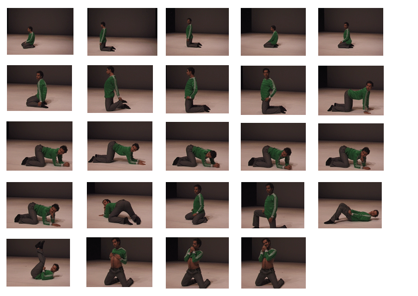

Study
2001-2005

In this study, Alice Chauchat constructs an archetypal female pornographic figure over a male body. Exposed in a pornographic mode and putting on female postures, the performer becomes woman by at least two aspects of representation: appearance and relation to the gaze. Femininity remains as nothing more than a "masquerade", but here the male performer looks back with a gaze proposed as a double feminization, in a way which collapses the gaze of the spectator.
Alice Chauchat introduces yet another layer though working with different performers, thus bringing about the disposability of the constructed image by transposing it onto various (male) bodies.
- The 1st version of study was produced by the Springdance/Mousonturm dialogue in Frankfurt in autumn 2001, as a 10 minutes sequence performed as "curtain raiser" on a blank stage by Tino Seghal.
- The 2nd version took on the form of open work sessions on three consecutive mornings during b-visible, a 72h event in Gent's Vooruit during autumn 2002. The audience was invited each morning to assist a session during which Alice taught the sequence to a male performer (respectively Ugo Dehaes, Thomas Plischke and Yasuo Akai), after which a discussion followed.
Martin Hargreaves reported it for b-visible's publication:
"After two hours sleep on the ghostlit stage i attended the first in a trio of workshops directed by Alice Chauchat, which explore the transposition of movement from the soft-porn video posing of a female model onto a male performer. In this case Ugo Dehaes was given very careful and attentive direction by Chauchat to variously drop his shoulders, arch his back, put his finger in his mouth and invite a consuming gaze without direct provocation or confrontation. Dehaes followed the instructions methodically without lasping into drag or parody and therefore the formal elements of the movement were emphasized instead of a symbolic display of a feminine construct. His subdued response gave this transposition an interesting edge as it became clear that he wasn't attempting to inhabit an alien image but to understand the movement on his own body. Nevertheless the detail and effort that went onto Chauchat’s re-contextualization of the eroticized feminine spectacle clearly made visible the poses and looks. Denaturalizing notions of bodily pleasure and display, the workshop thoroughly queered the exchange of desire within pornographic tropes of visible gender as neither Chauchat nor the audience fully adopted the role of voyeur but instead found pleasure in reflexively participating in a deconstruction of spectacular erotics."
- The 3rd version was made as a video for the group exhibition "Performance" in Flaca gallery, London, in July 2005. The performers in the film are Alexander Wolff, Manuel Gorckiewicz, Christian Mayer and Yves Mettler.
|